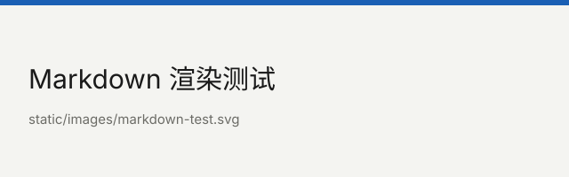

Markdown 渲染测试
文本
普通段落，粗体，斜体，删除线，行内代码 python3 build.py。
这一行和下一行之间只敲了一个换行，
所以渲染出来是同一段里的折行，不是新段落。
列表
- 第一层
- 第二层
- 第二层
- 第三层
- 回到第一层
- 有序第一项
- 有序第二项
引用
引用里的文字。
还是同一段。空一行之后的另一段。
代码
def build(posts):
for post in posts:
print(post["title"])表格
| 语法 | 支持 |
|---|---|
| 标题、段落 | 是 |
| 嵌套列表 | 是 |
| 表格 | 是 |
| 脚注 | 否 |
链接与图片
普通链接，尖括号自动链接：https://spec.commonmark.org/。

分隔线上面是一段，下面是最后一段。